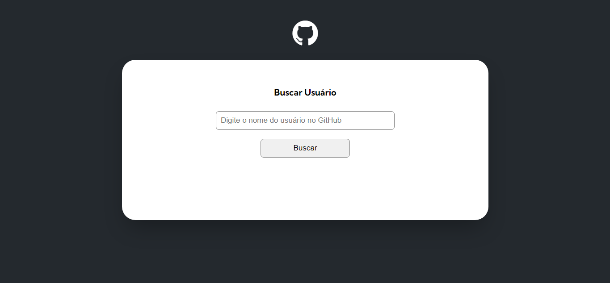
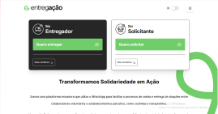

Olá,
Sou o Gabriel Albuquerque
Desenvolvedor Frontend
Sobre Mim
Olá! Me chamo Gabriel Albuquerque e sou um desenvolvedor frontend em formação! Gosto MUITO da área de tecnologia e mais ainda de desafios, e tenho certeza que posso contribuir em qualquer time com as minhas habilidades, aprimorar meus pontos fortes e melhorar onde ainda não sou bom.
Estou sempre me desafiando com novos projetos e participando de comunidades de programa√ß√£o para buscar feedback de outros desenvolvedores e desenvolvedoras. Al√©m de tentar ajudar essas pessoas com o que eu já aprendi. üòÅ
Habilidades
JavaScript
HTML5
CSS3
GitHub
Git
React
Typescript
Tailwind
Projetos
Huddle

Se trata de um desafio do site front-end mentor que consiste em construir uma landing page da empresa Huddle. O site é responsivo e acessível e destaca para o usuário os estados de foco de todos os elementos presentes na página
One Piece

Se trata de uma landing page construída durante o evento Semana do Zero ao Programador Contratado, do Dev em Dobro, ela apresenta os personagens principais do anime One Piece. É uma página responsiva, acessivél e conta com recursos de interatividade com o usuário
Nft Card

Se trata de um projeto de um card que reúne as principais informações de um produto a de maneira resumida. Esse projeto foi realizado para fins de treinamento do uso do flexbox
Resumo de Resultados
Se trata de um desafio do site front-end mentor que consiste em construir um componente de resumo de resultados, que mostra os atributos memória, comunicação verbal e a capacidade visual. O site é reponsivo e acessível
Gerador de Conselhos
Se trata de um desafio com o intuito de melhorar as minhas habilidades de desenvolvedor web. O projeto consiste em uma página que mostra um conselho aleatório retirado de uma Api de conselhos
Cartão Interativo

Se trata de um projeto feito com o intuito de treinar as minhas habilidades de desenvolvimento Web. O projeto consiste em validar os dados preenchidos pelo usuário, e depois de validados, fazer com que os dados apareçam no cartão e aparece na tela uma mensagem agradecendo o usuário.
GitHub API
Se trata de uma página em que você pode fazer uma busca por um perfil no GitHub através do nome de usuário, a página retorna os dados do perfil, como foto de perfil, os repositórios mais recentes e os últimos eventos que ocorreram nessa conta do GitHub.
Entregação
Esse foi um projeto em grupo, a ideia era desenvolver uma página para uma empresa de delivery que estava arrecadando alimentos para distribuir para as vítimas das enchentes no Rio Grande do Sul, nesse projeto eu tive meu primeiro contato com Tailwind e aprendi na prática como utilizar o GitHub para o trabalho em grupo.
Resgate Mais
Nesse projeto foi desenvolvido uma página para uma ONG gaúcha que estava arrecadando doações e recrutando voluntários para ajudar as vítimas das enchentes no Rio Grande do Sul, além de documentar a situação dessas pessoas. Nesse projeto, minha participação foi a estilização de parte da página, utilizando Tailwind, também pratiquei meus conhecimentos em GitHub para o trabalho em equipe.
Pokedex
Nesse projeto foi desenvolvido uma página que pega todos os pokemons e suas informações de uma API e mostra na tela, ele foi feito em Reactjs, contendo botão para alternar entre os temas claro e escuro, informações adicionais do pokemon ao clicar no card, também possui filtro por tipo e nome.